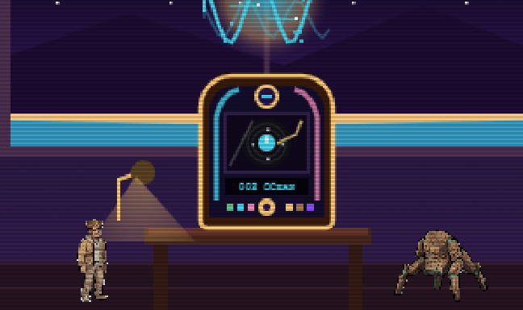
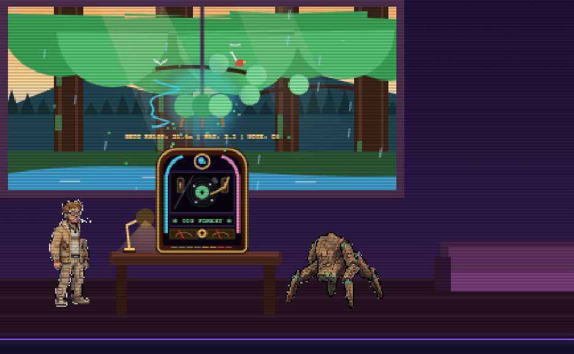
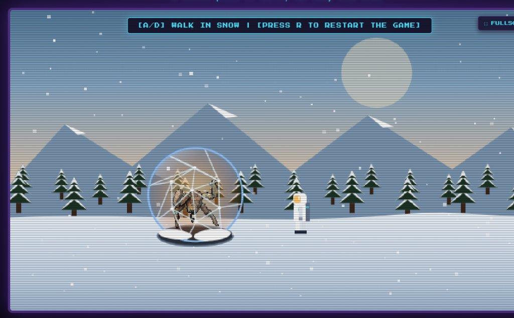
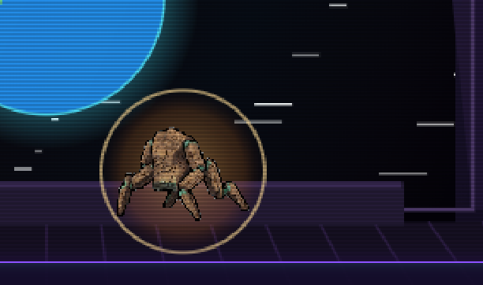
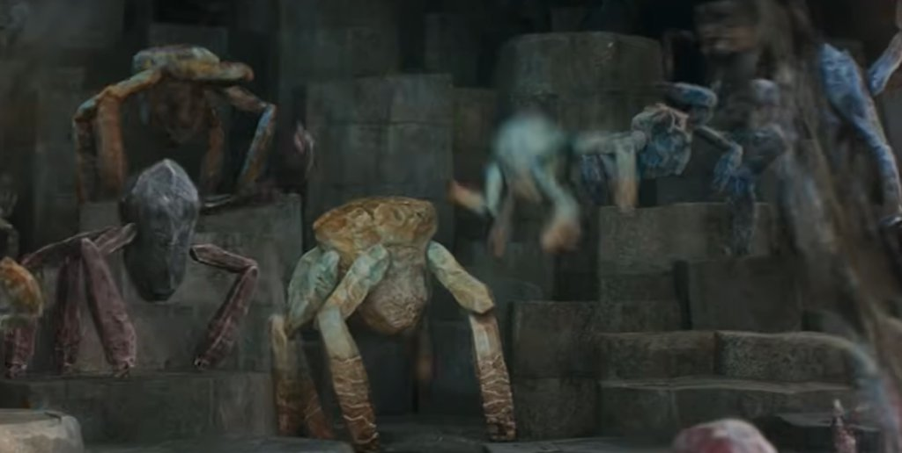
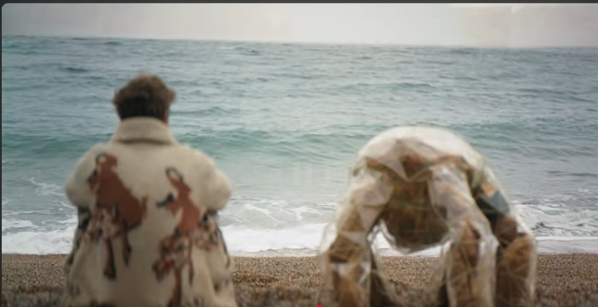
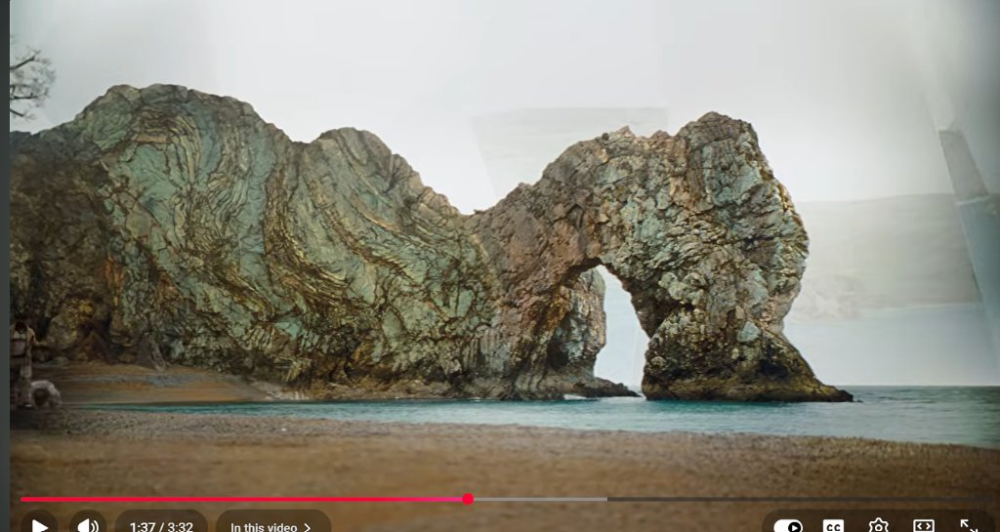

PROJECT PRESENTATION
SOUND OF TIMES
"A LITTLE PIECE OF EARTH, FAR AWAY FROM HOME."
PROJECT OVERVIEW: THE ERID JOURNEY
Inspired by Andy Weir’s Project Hail Mary, the story follows astronaut-scientist Dr. Ryland Grace (Ryan) and his extraterrestrial five-legged engineer companion Rocky on the alien world of 40 Eridani.
Ryan teaches young Eridian children ("the little ones") about planetary atmospheres and liquid water oceans in a natural amphitheater of stepped basalt pillars.
An ancient 1940s-style retro jukebox buried in the obsidian volcanic dust holds the only surviving acoustic recordings of Earth’s ecosystems. Exploring it reawakens Ryan's deep longing for home.

- Exile on Erid: Isolation, longing, teaching science.
- Acoustic Discovery: Unlocking Earth’s winds & waves.
- Rocky's Loyalty: "I will not let you travel alone!"
- The Homecoming: Standing together on Earth's coast.
REAL NASA SATELLITE SONIFICATION
Daily potential temperatures (4°C to 28°C) drive pitch along an oceanic Dorian scale. Practical salinity (SALT PSU) modulates FM synthesis brightness; surface flow velocity dynamically steers stereo spatial panning.
Spaceborne 1064nm lidar canopy heights (L4B/L3 Biomass) control granular wind filters. Avian call synthesizers algorithmically voice authentic songs of Nightingales, Mourning Doves, and Chickadees.
Precipitation rates (mm/hr) synthesize textured pink-noise raindrops and micro-droplet clicks. Barometric gradients govern resonant thunder sub-bass rumbles.

TECHNICAL ARCHITECTURE & WEB AUDIO
Built entirely with pure modern JavaScript (ES6+), HTML5 Canvas, and Tone.js. No React, no heavy frameworks, zero backend latency. Loads in under 400ms and runs at a rock-solid 60 FPS.
Eliminated browser autoplay audio blocks via a dedicated retro sci-fi Permission Dialog that primes the AudioContext and Tone.js engines upon first interaction. Includes hotkey [M] instant sound toggle.
Custom procedural synthesizers emulate authentic 1940s analog mechanics: motor turntable spin-up gliding from 45Hz to 320Hz, needle contact thud, and ratchet carousel indexing.

CHARACTERS & ENVIRONMENTS
Human astronaut and teacher. Dressed in his EVA spacesuit on Erid, and his iconic cream-and-chocolate mountain-ram fleece jacket when relaxing by the Jurassic Coast.
Segmented rock carapace, 5 articulated mineral legs. For visiting Earth, he is equipped with an articulated form-fitting geodesic xenonite exoskeleton with golden triangular struts and pressurized internal atmosphere.
4 color & behavioral variants (Obsidian stacker, Ochre listener, Turquoise leaper, Copper purrer) seated on chiseled stepped basalt amphitheater columns.


INTERACTIVE GAMEPLAY & MEMORY CINEMA
Typewriter text with authentic dialogue patterns: Rocky's iconic "Question:", "Amaze! Amaze! Amaze!", and the celebrated "Fist my bump!" with synced harmonic spark animations.
Tactile interactive shelf to switch records (1-4), toggle power, play, pause, stop, replay, and adjust volume sliders with real-time NASA waveform oscilloscope readout.
Zoom into Ryan's memories of Black Forest, ocean surf, and birds with speed control toggles (0.2x Ultra Slow, 0.35x Slow-Mo, 1.0x Normal) and photorealistic particulate drift.

CONCLUSION & FUTURE ROADMAP
- Merged rigorous NASA satellite science with an emotionally gripping narrative game.
- Engineered 4 live procedural sonification suites converting numbers to symphony.
- Designed a full retro pixel universe with authentic extraterrestrial biology.
- 100% web-native, accessible on any modern desktop or mobile browser.
- Planetary Archives: Mars seismic sonification (InSight) & Jovian radio waves (Juno).
- Classroom STEM Mode: Educational puzzles teaching sound waves to young Eridians.
- MIDI Device Support: Allow players to plug in synthesizers to jam with Rocky.

"Good. Proud. We saved two worlds, Grace. We are friends forever. Fist my bump!"
Carol Pillai & Ziven Pereira